Dr. Jie Luo罗杰Pre-tenured Professor (特聘教授)
智能光电感知团队, |
 |


我当前为杭州电子科技大学通信工程学院特聘教授。博士毕业于中国科学技术大学，期间在美国圣路易斯华盛顿大学联合培养，毕业后分别担任中国科学院空天信息创新研究院助理研究员、之江实验室高级研究专员，曾担任之江星座预研阶段星载算法主任设计师。
当前作为研究骨干参与浙江省第一颗海洋卫星研制工作，担任Remote sensing、Frontiers in Remote Sensing等多个SCI期刊专刊客座编辑，担任多个中英文期刊编辑与编委。主要从事卫星遥感探测机理及图像信息处理工作，参与十余起航天工程论证。
研究方向主要为遥感信息处理、星载计算、气溶胶云气候效应、图像辐射定标，光散射及辐射传输计算、森林火灾烟雾遥感与监测等，主持国家自然基金青年项目1项，以技术负责人身份负责项目多项，发表SCI论文20余篇，其中第一作者13篇，受大气遥感领域国际顶级学者邀请撰写书籍章节1章，作为指导老师指导学生获中国国际大学生创新大赛国银、省金各一项。
新闻
[2024年10月] 2024年10月12 - 15日，罗杰参加在上海交通大学举办的>中国国际大学生创新大赛，参与指导的《基于海洋光学遥感微纳卫星的高精定量监测装备》获国家银奖！

[2024年9月] 罗杰参与浙江省航空护林站直升机消防演习，见识了实际航空森林火灾灭火过程！


Publications [Google Scholar]
| 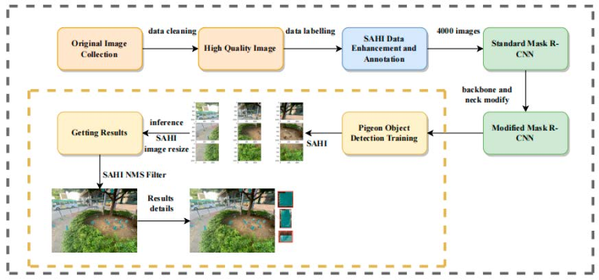 | Automatic Detection of Feral Pigeons in Urban Environments Using Deep Learning Zhaojin Guo, Zheng He, Li Lyu, Axiu Mao, Endai Huang, Kai Liu*. Animals, Jan, 2024 |
| 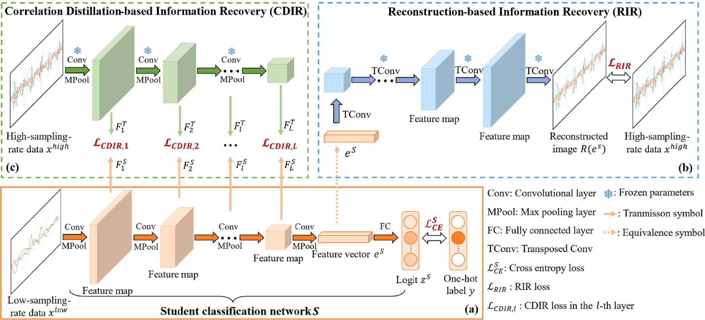 | A Teacher-to-Student Information Recovery Method Toward Energy-Efficient Animal Activity Recognition at Low Sampling Rates Axiu Mao, Mei Zhu, Endai Huang, Xi Yao, Kai Liu*. Computers and Electronics in Agriculture (COMPAG), Sep, 2023 |
| 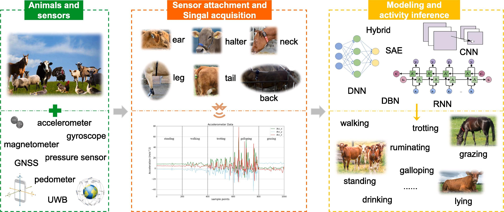 | Deep Learning-based Animal Activity Recognition with Wearable Sensors: Overview, Challenges, and Future Directions Axiu Mao, Endai Huang, Xiaoshuai Wang, Kai Liu*. Computers and Electronics in Agriculture (COMPAG), Jul, 2023 |
| 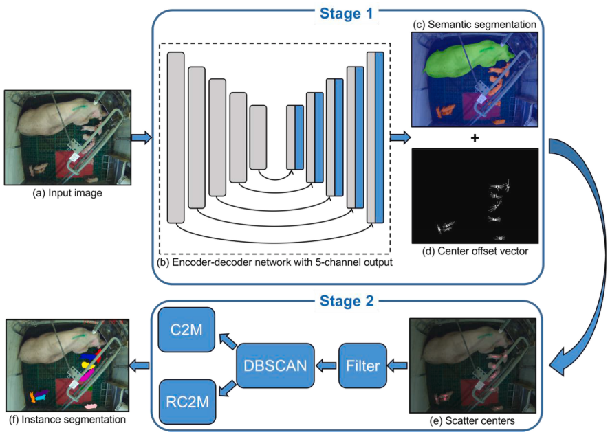 | Occlusion-Resistant Instance Segmentation of Piglets in Farrowing Pens Using Center Clustering Network Endai Huang, Axiu Mao, Junhui Hou, Yongjian Wu, Weitao Xu, Maria Camila Ceballos, Thomas D. Parsons, Kai Liu*. Computers and Electronics in Agriculture (COMPAG), May, 2023 |
| 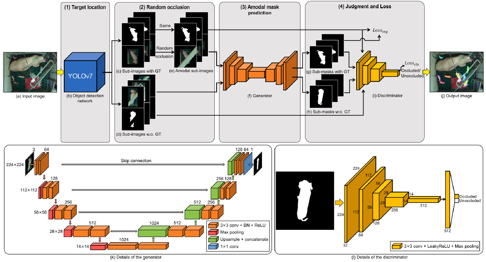 | A Semi-supervised Generative Adversarial Network for Amodal Instance Segmentation of Piglets in Farrowing Pens Endai Huang, Zheng He, Axiu Mao, Maria Camila Ceballos, Thomas D. Parsons, Kai Liu*. Computers and Electronics in Agriculture (COMPAG), Apr, 2023 |
| 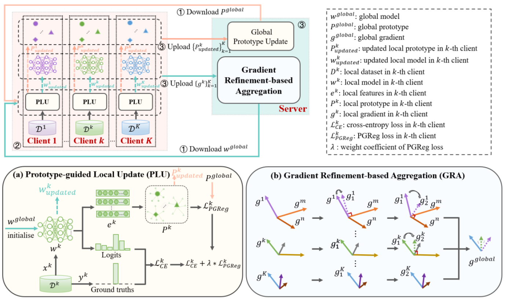 | FedAAR: A Novel Federated Learning Framework for Animal Activity Recognition with Wearable Sensors Axiu Mao, Endai Huang, Haiming Gan, Kai Liu*. |
| 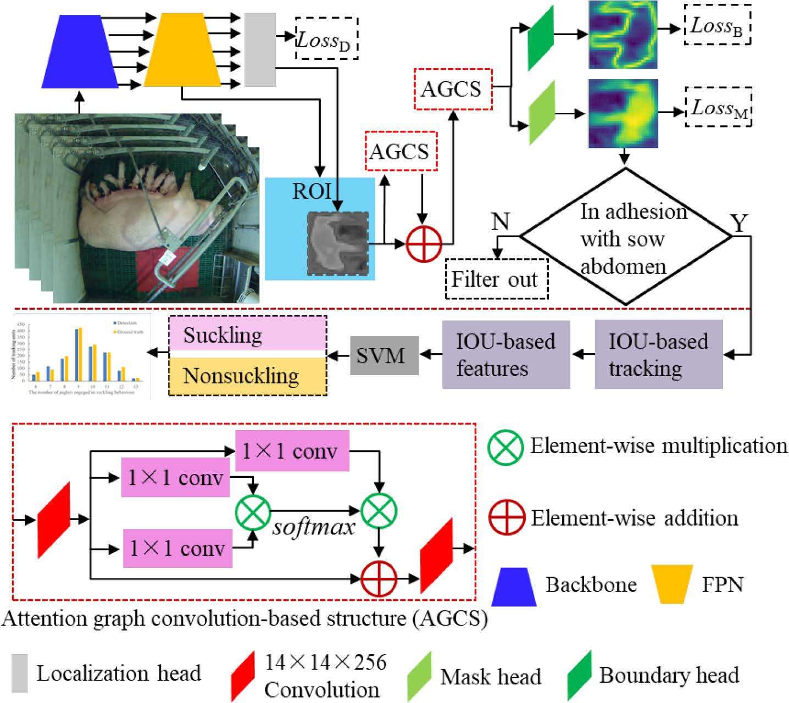 | Automated Detection and Analysis of Piglet Suckling Behaviour Using High-accuracy Amodal Instance Segmentation Haiming Gan, Mingqiang Ou, Chengpeng Li, Xiarui Wang, Jingfeng Guo, Axiu Mao, Maria Camila Ceballos, Thomas D. Parsons, Kai Liu*, Yueju Xue*. Computers and Electronics in Agriculture (COMPAG), Aug, 2022 |
| 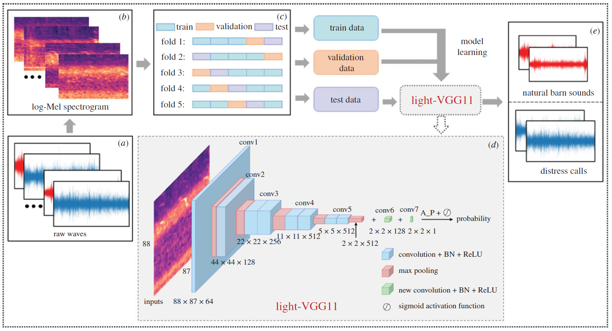 | Automated Identification of Chicken Distress Vocalizations Using Deep Learning Models Axiu Mao, Claire S. E. Giraudet, Kai Liu*, Inês De Almeida Nolasco, Zhiqin Xie, Zhixun Xie, Yue Gao, James Theobald, Devaki Bhatta, Rebecca Stewart, Alan G. McElligott*. Journal of Royal Society Interface (J.R.Soc.Interface), Jun, 2022 |
| 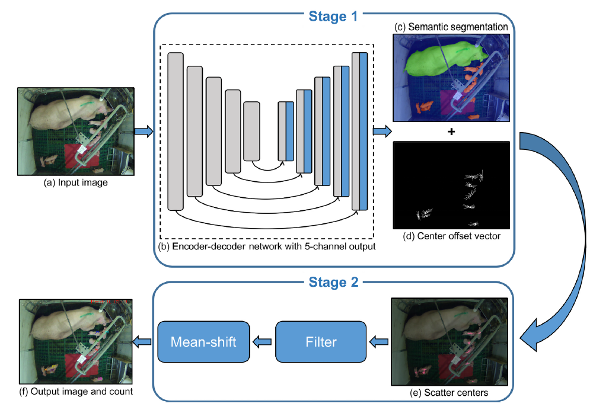 | Center Clustering Network Improves Piglet Counting Under Occlusion Endai Huang, Axiu Mao, Haiming Gan, Maria Camila Ceballos, Thomas D. Parsons, Yueju Xue, Kai Liu*. Computers and Electronics in Agriculture (COMPAG), Oct, 2021 |
| 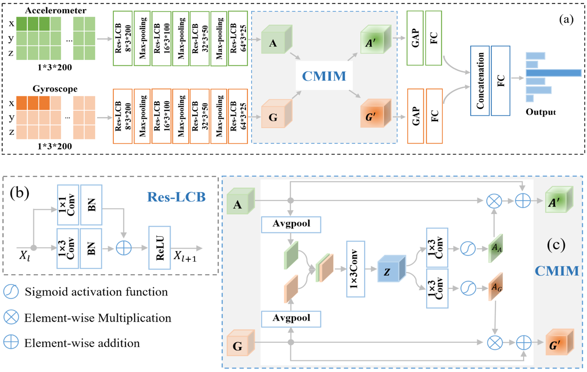 | Cross-Modality Interaction Network for Equine Activity Recognition Using Imbalanced Multi-Modal Data Axiu Mao, Endai Huang, Haiming Gan, Rebecca S. V. Parkes, Weitao Xu, Kai Liu*. |
| 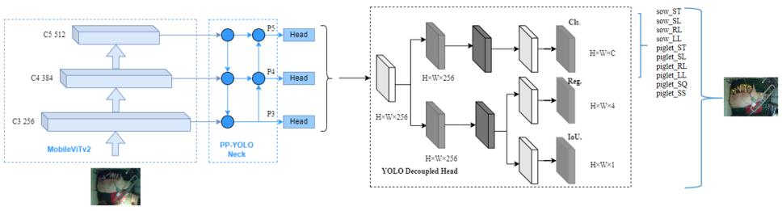 | DeMVpp-YOLO: A Lightweight Pig Behavior Detection Model for Improved Pig Health Management in Farrowing Pens Zhaojin Guo, Li Lyu, Zheng He, Axiu Mao, Endai Huang, Kai Liu*. 2023 International Symposium on Animal Environment and Welfare (ISAEW 2023), Oct, 2023 |
| 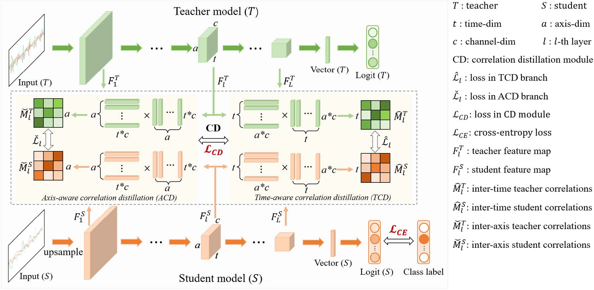 | Robust Animal Activity Recognition Using Wearable Sensors: A Correlation Distillation-based Information Recovery Method Toward Data Having Low Sampling Rates Axiu Mao, Endai Huang, Meilu Zhu, Kai Liu*. 2nd U.S. Precision Livestock Farming Conference (USPLF 2023), May, 2023 |
| 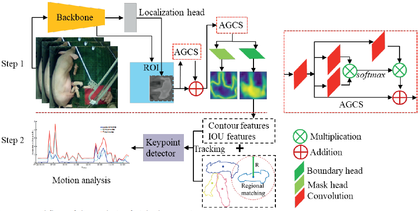 | Occlusion-resistant Locomotion Analysis of Piglets Using Amodal Instance Segmentation Haiming Gan, Axiu Mao, Cheryl Natalie Sze, Endai Huang, Maria Camila Ceballos, Thomas D. Parsons, Kai Liu*. 2nd U.S. Precision Livestock Farming Conference (USPLF 2023), May, 2023 |
| 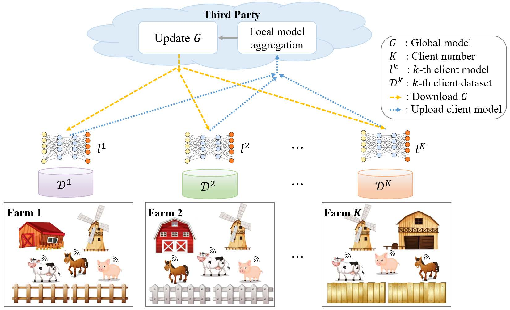 | Uniting Farms: Federated Learning for Sensory-based Animal Activity Recognition Axiu Mao, Endai Huang, Haiming Gan, Kai Liu*. 2022 European Conference on Precision Livestock Farming (ECPLF 2022), Aug, 2022 |
| 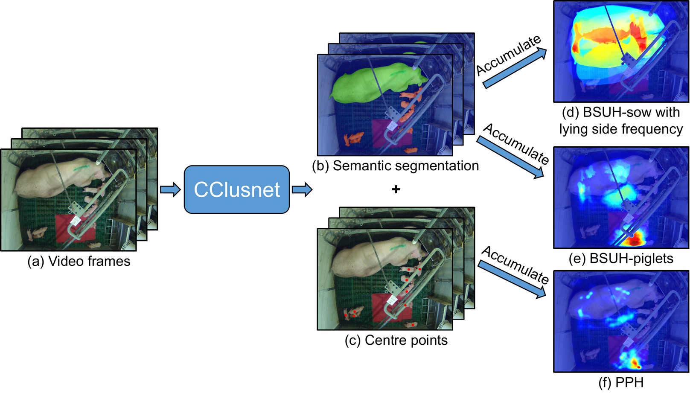 | Occlusion Resistant Spatiotemporal Analysis of Pig Distribution Pattern in Farrowing Pens Using Centrer Clustering Network Endai Huang, Axiu Mao, Haiming Gan, Kai Liu*. 2022 European Conference on Precision Livestock Farming (ECPLF 2022), Aug, 2022 |
| Cross-Modality Interaction Network for Equine Activity Recognition Using Time-Series Motion Data Axiu Mao, Endai Huang, Weitao Xu, Kai Liu*. 2021 International Symposium on Animal Environment and Welfare (ISAEW 2021), Oct, 2021 |
|

|
A Key Frame Selection Method for Creating Deep Learning Training Set in Animal Research Involving Time-Series Video Data Endai Huang, Axiu Mao, Haiming Gan, Kai Liu*. 2021 International Symposium on Animal Environment and Welfare (ISAEW 2021), Oct, 2021 |

|
Capacity Limit of Deep Learning Methods on Scenarios of Pigs in Farrowing Pen under Occlusion Endai Huang, Axiu Mao, Maria Camila Ceballos, Thomas D. Parsons, Kai Liu*. American Society of Agricultural and Biological Engineers (ASABE 2021) , Jul, 2021 |

|
Deep Learning-based Assessment of Laying-hen Feather Conditions Using Color and Thermal Images Endai Huang, Axiu Mao, Kai Liu*, Yueju Xue. 2nd Asian Conference on Precision Livestock Farming (ACPLF 2020), Oct, 2020 |
Honors & Awards
Second Runner-Up, Huawei Developer Competition 2023 - Asia Pacific, 2023
Bronze Award, 9th China International College Students' 'Internet +' Innovation and Entrepreneurship Competition, 2023
Silver Award, 8th China International College Students' 'Internet +' Innovation and Entrepreneurship Competition, 2022
Research Tuition Scholarship (RTS), City University of Hong Kong, 2022 - 2023
Outstanding Graduate Student Paper and Presentation Award at ISAEW, 2021
Outstanding Graduates of Zhejiang Province, 2019
Meritorious Winner, Mathematical Contest in Modeling (MCM), 2018
First Prize, 10th National Mathematics Competition, 2018
First Prize, Physics Innovation Competition in Zhejiang Province, 2018
First Prize, Higher Mathematics Competition in Zhejiang Province, 2018
First Prize, National University Mathematical Modeling Competition in Zhejiang Competition Area, 2017